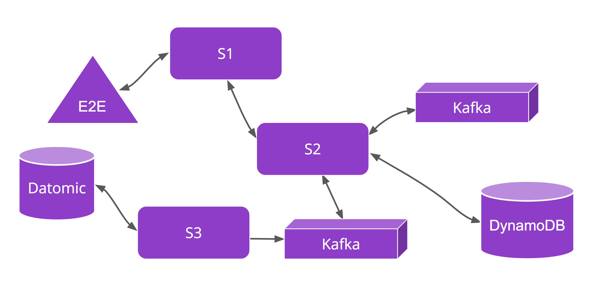
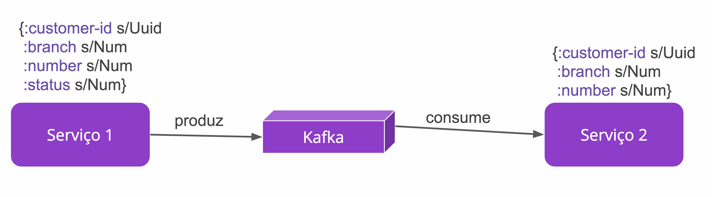
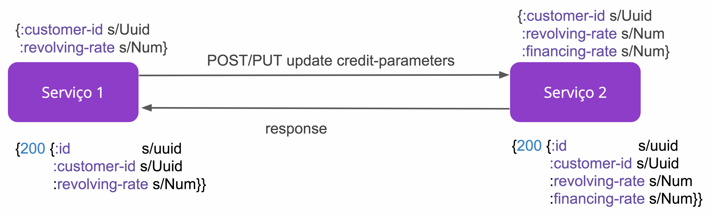
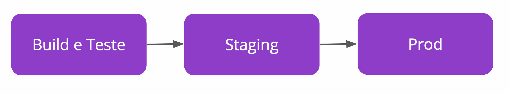

Testes em uma arquitetura
Microsserviços
Marina Limeira
Engenheira de Software @ Nubank
marinalimeira.comCartão
NuConta
Rewards
micro-serviços 💜

Ports and Adapters

Testes Unitários

Testes Unitários
Comportamento
Lógica
Happy e Unhappy path
Validação de Schema das funções
Imutabilidade 😍
Postman

Postman
*world*
End-2-End
End-2-End
Fila única para todos os times
Útil para criar coisas em staging
Poucos bugs detectados
Google Testing Blog
Martin Fowler's blog
Consumer Driven Contracts
Consumer Driven Contracts
Consumer Driven Contracts
Exemplos gerados de acordo com o que é declarado
Imagem docker gerada após cada build com sucesso
CI + CD
Merge no master → prod
Pipeline (GO)

Pipeline (GO)
Build e Teste
Testes Unitários
Postman
CDC
Docker
Não temos QA
Roll out de features
Staging
Mobile & Testes entre os serviços
Dúvidas? 🤔
Obrigada!
sou.nu/vagasnu